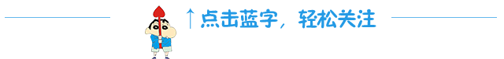

互惠动态
|
|
要求孩子考个100分，不如让孩子学会这10点

一个优秀的家庭、一对优秀的父母，并不需要给你的孩子留10亩地、10栋房子、10个百万元的存款，最重要的是言传身教给做人的道理。孩子能不能考100分，真的并不是最重要，能不能做到这十点，才决定了他能不能被别人、被社会所接纳，为自己所动容!
1、
耐心倾听。如今很多人缺乏耐心，容不得倾听别人的解说，总认为自己说的才是最准确、最有道理，其实很多情形下个人的考虑会有片面性，要懂得倾听别人。
2、
勤快地阅读。勤，是要有阅读习惯，学会零星时间阅读，要在遇到各种困难时坚持阅读。快，是有较快阅读速度，有获得新信息的能力。
3、
与任何人沟通。没有良好的沟通能力就无法适应现实社会，也会失去很多个人发展机遇。家庭教育中，父母与孩子的沟通尤为重要。
4、
写作。写作能力是一种很好的表达与宣传方式。
5、
独立自主生活。这是每个人必须具备的生存能力，也是个人面对生活和职业须具有的基本能力。
6、
养成严谨的性情。严谨品性是孩子将来与人交往、受人尊重、让人欣赏的最基本的人品。
7、
懂得彼此尊重，懂得自我批评。
8、
有环保观念，留给下一代一个完好的地球。
9、
教育并培养周围的人。不仅懂得自己学习、自己阅读，而且会带动和影响身边的人共同学习，这会给自己深入学习营造一个理想环境。
10、
与外界友好地接触。善于接受崭新事物，善于发现和学习新东西并且不断接受它，是一项重要能力。
【文章来源于网络】